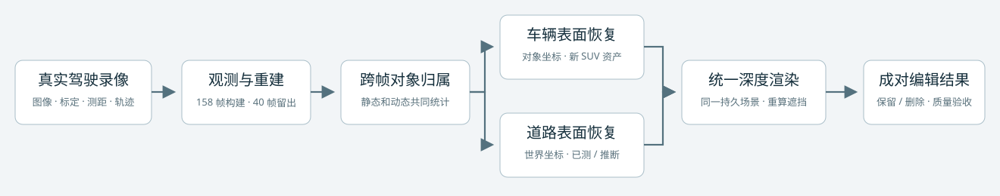
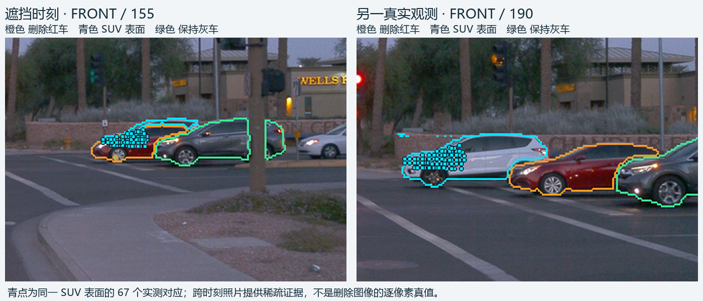
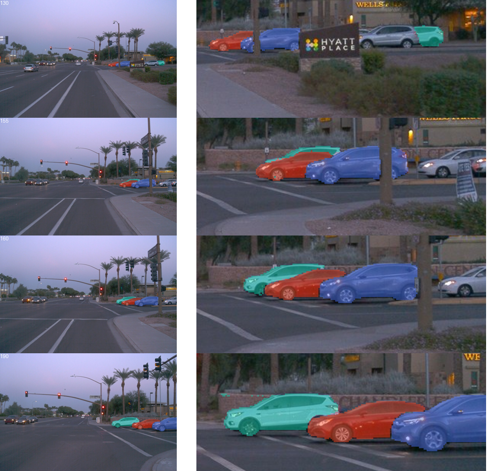
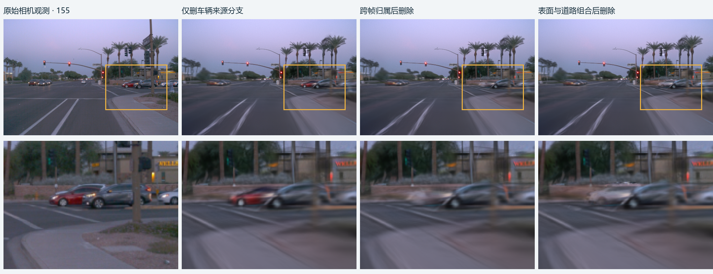
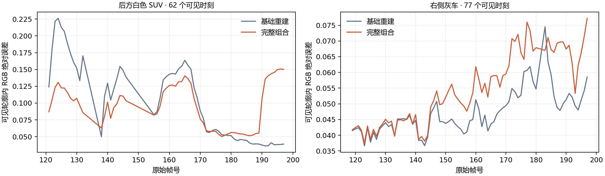
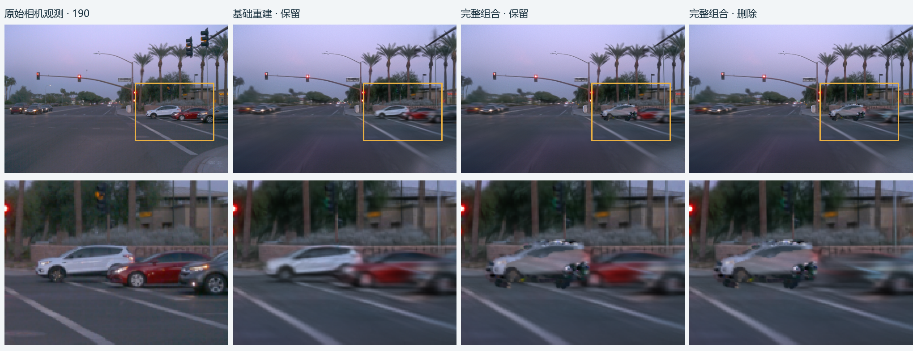

独立街段实验 · 2026-11-08 · WAYMO 验证集
删除路口右侧红车后，
后方 SUV 能否正确显露？
一段新录像已完成分割核验、真实 GPU smoke、10,000 步重建、车辆与道路资产构建，以及完整保留／删除实验。车辆曲面与道路预处理有适配差异，因此本轮不能称为完全冻结方法的迁移验证。
198 个原始时刻158 构建 + 40 连续留出前相机 · 480 × 320 渲染未使用 subagent
本次自动适配版本未通过质量验收。删除目标的直接贡献归零、同一场景可重复编辑等机械检查通过，但白色 SUV 的总体可见外观误差上升，灰车 77 个可见时刻中有 72 个退化。已恢复的 SUV 表面放回整场景后仍受到其他表示干扰，不能把目标消失等同于正确显露。
一段新录像如何变成可编辑场景
输入相机图像、相机标定、激光测距和对象轨迹。首先建立带时间的三维场景，再用构建时刻的可见贡献，把静态和动态高斯共同分配给实例。道路在世界坐标恢复，车辆在各自对象坐标恢复。编辑时复用同一套资产，只移除目标实例，并通过一次统一深度排序重新计算遮挡。

本轮执行的是当前候选系统的新场景实例化。新 SUV 的参考曲面和道路图表采用自动适配器，见下文差异说明。
实验中是哪几辆车
待删除的是棕榈树路口右侧等待的红色轿车。它遮住后方白色 SUV 的一部分车身；右侧灰车作为保持对象。查询时刻为原始第 155 帧，第 190 帧提供同一 SUV 表面的真实观测。三辆车只是本次验收角色，分割和跨帧归属规则对所有可用对象一致执行。

同一 SUV 局部坐标内的 67 个激光测量锚点。它们来自构建集，可检查表面与遮挡关系，不构成独立隐藏区域真值。
四帧分割与 smoke
第 130、155、160、190 帧均做过视觉核查。仅用二维框的第一版会把红车收入 SUV 掩码；改用同帧实测点提示，并按三维框射线入深度解决掩码重叠后，三辆车的可见区域得到分离。参考帧的 67 个锚点均落在 SUV 掩码内，查询帧有 65 个落在红车遮挡轮廓内。这里没有人工逐像素分割真值，也未代填人工质量 verdict。

分割核验通过后才导出全部 158 个构建时刻的监督。框、点提示和射线重叠解析仍有标定近似与轮廓误差。
真实 GPU smoke 持续 603.67 秒，完成 5,914 步并保存完整检查点。随后完成评价、优化器／随机数／相机采样／运行状态的精确恢复，再执行 2 步进入后续阶段。共 5,916 次工程更新，与正式 10,000 步分别记账。峰值保留显存约 5.69 GiB。道路交接门另在第 32 步保存并精确恢复，累计正式 1,000 步。
从来源删除到完整组合

第 155 帧，同一相机。上排为全图，下排为同一固定区域放大。仅删除来源分支时红车基本仍在；跨帧归属处理静态与动态表示后，红车明显消失。完整组合仍需接受显露与保持检查。
跨 158 帧的可见贡献多数规则识别出红车的 813 个静态高斯和 46 个动态高斯，阈值为严格大于 0.5。未分配动态高斯保留原来源身份。SUV 原生表示退出后，接入本场景的 PVD 先验、实测深度约束的 C² 曲面、固定几何材质拟合与 SurfaceLOD 采样；道路使用新街段实测点和跨时刻真实颜色。保留与删除共用资产，未按屏幕掩码拼接结果图。
道路两域分别为 2,436 和 4,185 个跨帧像素样本，均使用相同分母。颜色代理来自构建观测或邻近插值，不是独立删除真值。深度是统一光栅的 alpha 加权读出；最后一列仅针对第 155 帧的稀疏锚点。
恢复了资产，为什么仍没有正确显露
67 个实测锚点到 SUV 资产最近表面的平均距离为 2.30 厘米。SUV 单独渲染时，这些位置平均不透明度为 0.993，深度误差为 4.56 厘米；放回完整场景后，深度误差为 3.36 米，SUV 自身贡献约 47.7%，其他已有表示贡献约 52.3%。该只读控制表明，当前主要限制涉及场景表示交接和遮挡竞争。它没有把其他贡献进一步唯一归因为某一种高斯来源，也没有证明资产在所有视角完整正确。
保留对象的完整分母
这里比较的是保留状态对原相机图像的 RGB 误差，按像素加权。SUV 有 41/62 帧改善，但后段更大的车身区域退化，使总体误差从 0.07534 升至 0.09447。灰车从 0.04979 升至 0.06002，72/77 帧上升。只报改善帧数或整图平均值会掩盖这些问题。

全部有可见掩码的时刻，没有删去负例。两条曲线均对原始相机观测评价。
第 190 帧的负例。完整组合中 SUV、灰车及目标车保留外观均有退化；原始图像和基础重建共同保留，便于判断代价。
留出、道路支持与通过的检查
原始 79–118 帧连续 40 个时刻的 RGB 和测距未进入重建、分割监督、跨帧融合或资产拟合。拟合完成后只解码留出 RGB 做评价，没有解码留出激光。相机沿用构建集归一化；在 6 个构建相机上核对变换矩阵，最大差为 0。留出整图 MAE 为基础重建 0.11659、完整组合 0.11159，明显高于构建集。该窗口没有白色 SUV 的官方前向可见帧，因此不能据此宣称 SUV 显露在独立时刻通过验证。
道路图表为 2 厘米网格，44,247 个单元中有 7,823 个具有至少三个一致真实观测，18,468 个标记为最多 0.6 米邻域内的沥青推断；17,956 个保持未知。用于几何的 4,965 个道路测量点中有 4,381 个平面内点，拟合残差约 3.72 厘米。推断不是测量，也不说明车底隐藏路面已恢复正确。
- 158 构建时刻、40 留出时刻均完成成对保留／删除和保留复放；复放结果逐值相同。
- 目标实例的直接贡献归零。最终构建帧分组贡献和总 alpha 的最大差约 1.73 × 10⁻⁶。
- 基础场景参数未在只读评价和交接门优化中改写。
- 目标掩码为空的 82 帧中，51 帧仍有删除引起的像素变化，最大为 2,348 像素；这是外延与归属稳定性的警示，不能当作正确编辑。
完整视频
从第 0 到 197 帧按原始 10 Hz 连续排列，留出段已按原时刻插回。视频内依次为原始观测、基础重建、完整组合保留、完整组合删除。
下方固定局部放大覆盖 119–197 帧。放大采用最近邻，便于观察原渲染像素。
实现边界、账本与复现
这次完成了新街段的端到端实例化，尚不是严格冻结全部预处理代码的迁移成功。原街段的人工参考曲面准备改为最大可见面积参考视图和自动深度关联；道路准备改为自动局部稳健测量平面。保留了原生监督、SGCM、NPS、采样规则与 30K 学习率时钟，正式在 fresh 10K 停止；完整动态 alpha MSE 系数为 100，整图 RGB 与静态 RGB 系数均为 1。本轮没有重新拟合原街段资产，也没有复制原街段颜色系数。MOG-2 的条件生成道路场、严格不透明求交与反事实可见性训练损失仍未实现。
计算分别记账为原生正式 10,000 步、工程 smoke／恢复 5,916 步、冻结 PVD 先验 1,000 次扩散推断、曲面 5 轮 IRLS、固定几何材质 1,000 次 FISTA、道路交接门 32 + 968 = 1,000 步。PVD 扩散步和材质求解步不是神经训练更新。原生初始化、环境入口、dtype 和只读加载的失败现场均保留；零更新失败不计入训练步数。材质设计矩阵复用前次采集，62 个构建观测的来源由点库与日志记录，最终求解收据的 frames 数组为空属于缓存分支记录缺项。
下轮可研究如何让旧表示在恢复表面接入时正确退出，同时约束未编辑车辆保持。本轮没有追加针对某一帧的修补，也没有据此证明某个新训练目标有效。
原始身份与恢复入口
街段 12820461091157089924_5202_916_5222_916；目标红车 lvxXvuSB3kueTyP2ignh7w，SUV DwjZr_bYUSZOr-XDGregnA，灰车 AyRpKRmelCT4A709Lo8pvA。原生正整数身份分别为 70 / 25 / 20，仅用于数据绑定。
远端实验目录 /root/autodl-tmp/drivingeditor_repro/campaign/waymo_val029_v44_20261108_r1。完整恢复包包括 fresh10K 参数、Adam／运行状态、新资产、原生引擎／API、CPU 观测库与实例掩码，压缩后约 1.31 GB；原始 TFRecord 的 SHA 与路径在输入收据中，原文件未重复打包。全部 1,424 份渲染浮点层远端保留并登记 SHA，四个关键帧的原始浮点层已另取回。
完整汇总指标 · 逐帧区域表 · 显露只读控制 · 执行与恢复清单 · 执行队列源码